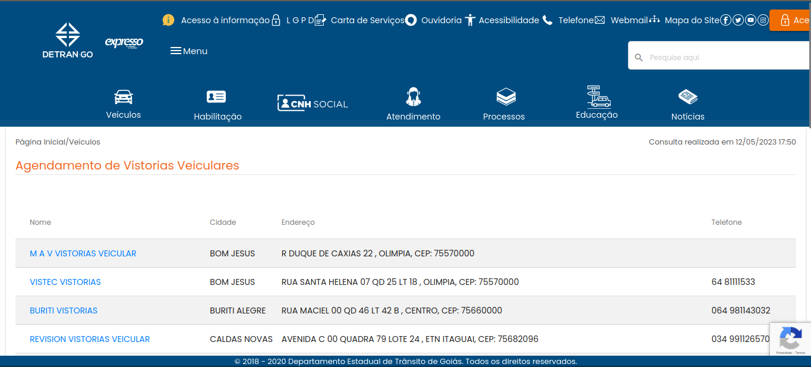

Princípios e diretrizes do projeto
1. Introdução
Por definição, princípios representam objetivos gerais e de alto nível, enquanto diretrizes são regras seguidas e observadas no desenvolvimento de um projeto. Segundo Simone (2021), por mais que existam diversos princípios e diretrizes consolidados na literatura de IHC, estas devem ser utilizadas como uma ferramenta auxiliar ao processo de design, não o substituindo[1].
2. Metodologia
Para determinar quais princípios e diretrizes seriam utilizadas no projeto, foram analisadas quais destas são utilizadas comumente em IHC e apresentados por Simone Barbosa[1]. Sendo estas:
- Correspondência com as espectativas dos usuários.
- Simplicidade nas estruturas das tarefas.
- Equilíbrio entre controle e liberdade do usuário.
- Consistência e padronização.
- Promoção da eficiência do usuário.
- Antecipação das necessidades do usuário.
- Visibilidade e reconhecimento.
- Contéudo relevante e expressão adequada.
- Projeto para erros.
3. Princípios e diretrizes gerais
Segundo Norman (1988) um sistema deve ser projetado a partir de um modelo conceitual que o usuário possa compreender e aprender seu uso sem dificuldades. Este modelo deve ser capaz de interpretar as relações entre o sistema e o mundo real[1]. A partir disso os 9 princípios e diretrizes apresentados acima são comumente utilizados nos projetos de IHC, abaixo estão descritos cada um deles. Cada descrição foi retirada e adaptada do livro de Simone Barbosa[1].
3.1. Correspondência com as expectativas dos usuários
O sistema deve ser projetado de forma a remeter suas funcionalidades a ações anteriores do usuário, fazendo com que o sistema atenda uma expectativa do usuário acerca de como cada função será executada. Para alcançar esse objetivo Norman (1988) sugere que o sistema se espelhe no mundo real, se baseando em como seu usuário realiza suas funções no mundo real, criando assim uma relação entre as intenções do usuário e as ações do sistema.
Além disso, Shneiderman (1998) recomenda que o sistema siga uma linha de raciocíonio ao desempenhar suas funções, além de fornecer uma resposta eficaz acerca do estado atual do sistema. Sempre se baseando no mundo real para definir uma linha de raciocínio lógica a ser seguida pelo usuário.
Por fim, Tognazzini (2014) alerta acerca do uso de metáforas e jargões nos conteúdos do sistema, pois podem confundir o usuário. Contudo, uma metáfora bem colocada pode acabar por auxiliar no entendimento do sistema, para isso as mesmas devem remeter a conceitos familiares ao usuário.
3.2. Simplicidade nas estruturas das tarefas
Segundo Norman (1988) as tarefas devem ser simplificadas, reduzindo o planejamento e resolução de problemas relativos à mesma. Seguindo isso, tarefas complexas devem ser reestruturadas, para isso podem-se utilizar 4 técnicas:
- Fornecer ajuda e apoio ao usuário na realização da tarefa.
- Utilizar tecnologia para melhorar o feedback e aumentar o controle do usuário.
- Automatizar a tarefa ou parte dela.
- Modificar a tarefa para torná-la mais simples.
Deve-se tomar cuidado ao se utilizar demais da automatização, pois esta prática acaba por reduzir o controle e autonomia do usuário em relação ao sistema e a tarefa.
3.3. Equilíbrio entre controle e liberdade do usuário
O sistema deve sempre buscar se adaptar de forma a permitir o controle do usuário sobre o mesmo, ao mesmo tempo que impõe restrições de forma a evitar erros do utilizador. Para isto, Norman (1988) sugere se utilizar das restrições para induzir o usuário a realizar apenas as ações "corretas", Tognazzini (2014) sugere porém, que o usuário possua um caminho principal com menos restrições mas que possa explorar o sistema como bem entender.
O sistema também deve fornecer uma sáida clara dos caminhos de utilização, ao mesmo tempo que deve se tornar mais fácil continuar no caminho principal a sair do mesmo. Segundo Cooper (1999), o sistema deve ser maleável, ou seja, permitir que as ações possam ser realizadas fora de ordem e com total liberdade, porém sempre mantendo registros para que nada se perca.
Além disso, o sistema deve ser capaz de permitir que o usuário inicie e desfaça as ações, evitando que o mesmo apenas reaja aos avisos do sistema, além de reduzir sua ansiedade e aumentar seu aprendizado no uso do sistema. Permitir que o usuário desfaça suas ações também auxilia na quantidade de informação ao evitar a necessidade de diversas janelas de confirmação por exemplo.
Por fim, o sistema também deve permitir que o usuário personalize sua experiência através de parâmetros configuráveis, o sistema deve porém, ser projetado de forma a ser totalmente utilizável com seus parâmetros padrão.
3.4. Consistência e padronização
O sistema deve manter um padrão de conteúdo no decorrer de seu uso assim como com sua documentação, desta forma pode-se melhorar o aprendizado do usuário, assim como corresponder às suas expectativas. Segundo diversos autores, o sistema deve ter suas funções, resultados, layout e visualização de informação padronizados e consistentes.
Para alcançar esta padronização, as funções com resultados semelhantes devem ser semelhantes da mesma forma, os usuários devem ser capazes de identificar e reconhecer funções a partir de seu design, além disso, eles não devem ter que se perguntar se palavras ou ações diferentes possuem o mesmo resultado ou significado.
Tognazzini (2014) recomenda que ações inertes do usuário possuam maior importância de padronização, evitando assim erros inconscientes. Seguindo esta lógica, funções com resultados diferentes devem ter layouts obviamente diferentes, da mesma forma, ações que necessitam de maior atenção do usuário podem ser discrepantes do restante para que evitem ações inertes a partir do usuário.
3.5. Promoção da eficiência do usuário
Segundo Tognazzini (2014), o sistema deve priorizar a eficiência do usuário acima de performance computacional, já que pessoas são mais custosas do que máquinas. Para isso, recomenda que o sistema mantenha o usuário ocupado a todo momento ao deslocar processos demorados para executar em segundo plano, permitindo que o usuário se ocupe com outra tarefa. Já segundo Cooper (1999), o sistema não deve interromper o usuário durante a realização de uma tarefa, evitando perda de tempo.
Além de manter o usuário ocupado, outra estratégia para aumentar a eficiência é a proteção do trabalho dos usuários, o sistema deve garantir que nada que o usuário realiza seja perdido por alguma falha. Além disso, o sistema deve se recordar das ações do usuário, para que assim seu trabalho possa ser recuperado.
Nielsen (1994c) e Shneiderman (1998) recomendam a implementação de atalhos e aceleradores ocultos, estas ferramentas auxiliam e melhoram a eficiência de usuários experientes ao mesmo passo que não interfere na utilização do sistema por usuários iniciantes.
3.6. Antecipação das necessidades do usuário
Segundo Tognazzini (2014) o sistema deve ser capaz de prever as intenções e desejos do usuário, se prontificando a atendê-los antes que o mesmo solicite. Uma forma de realizar esta antecipação proposta por Cooper (1999) é fornecer informações adicionais úteis ao usuário, evitando buscas repetitivas por exemplo, além disso o sistema deve ser capaz de se preparar para prováveis situações futuras.
Tognazzini (2014) também recomenda a atenção na criação de valores padrão bem definidos, além disso estes valores também podem ser pré-preenchidos em formulários, porém sempre permitindo a edição e alteração pelo usuário.
3.7. Visibilidade e reconhecimento
Segundo diversos autores, o sistema deve ser visível, ou seja o usuário deve possuir as informações necessárias para a operação do sistema a todo momento e para isso o estado, objetos, funções e opções do sistema devem estar constantemente atualizados e perceptíveis pelo usuário. Além disso, o usuário nunca deve ser responsável por lembrar informações passadas para ou por ele anteriormente, sendo uma tarefa do sistema.
Segundo Tognazzini (2014), o sistema deve possuir mecanismos de status eficientes, pois o usuário não deve ter que buscar informações acerca do estado atual do sistema. Contudo, Cooper (1999) recomenda que as mensagens de status não devem ser exageradas, já que podem confundir o usuário, portanto devem ser sutis em sua grande maioria, destacando apenas os feedbacks de grande importância. O sistema também deve deixar claro ao usuário sua posição atual e caminho percorrido, permitindo o retorno facilitado e a navegação eficiente pelo sistema.
Quanto aos feedbacks do sistema, diversos autores recomendam que ações frequentes e com resultado esperado possuam feedbacks sutis, enquanto ações disruptivas ou voláteis possuam um feedback destacado. Segundo Tognazzini (2014), o sistema deve fornecer avisos ao usuário indicando o funcionamento do sistema durante carregamentos, os feedbacks podem ser classificados e implementados de acordo com a tarefa realizada e seu tempo de execução:
- Feedback visual/sonoro até 50ms após o clique em um botão.
- Sinalizar com uma ampulheta quando uma operação de 0,5 a 2s for realizada.
- Apresentar informações sobre o tempo de execução assim como uma barra de progresso para ações que demorem mais do que 2 segundos.
- Quando uma operação necessitar mais de 10 segundos, o sistema deve alertar de forma sonora e visual seu término, para recuperar a atenção do usuário.
3.8. Contéudo relevante e expressão adequada
Segundo Reeves e Nass (1996) e se baseando no princípio de conversa cooperativa de Grice (1975), uma interação polida entre usuário e sistema deve seguir quatro máximas:
- Máxima da qualidade: Define que não se deve repassar informações imprecisas ou falsas ao usuário, ou seja, não mentir ou especular.
- Máxima da quantidade: Define que as informações devem ser simples, evitando dados desnecessários para o contexto de uso atual.
- Máxima da relação: Define que tudo que é apresentado deve ser relacionado ao tópico atual e ser relevante para o usuário futuramente.
- Máxima de modo: Define que se evite ambiguidade na apresentação das informações.
Além das quatro máximas, é recomendavel seguir algumas orientações para criar uma boa relação entre usuário e sistema, segundo Nielsen (1994c) o sistema deve possuir uma estética minimalista, evitando informação desnecessária e focando o usuário nas informações que necessita. Tognazzini (2014) recomenda o uso de textos e elementos concisos e informativos, além disso deve-se priorizar o entendimento do usuário à precisão dos termos utilizados.
Além das informações, as cores são de grande importância na expressão do sistema, guiando o uso do sistema e criando uma interface agradável, contudo deve-se tomar cuidado para a questão da acessibilidade, permitindo que o sistema seja operado por usuários com dificuldades.
3.9. Projeto para erros
Segundo Norman (1988), o sistema deve ser projetado ao erro, ou seja, deve ser preparado pensando que qualquer erro potencial será cometido pelo usuário, e se prontificando para ajudá-lo a se recuperar do erro, além de permitir a reversão de qualquer ação do usuário e dificultar a realização de ações irreversíveis.
Cooper (1999) recomenda que controles perigosos, ou seja, que realizem ações importantes e irreversíveis não sejam posicionados próximos a controles frequentemente utilizados pelo usuário, evitando assim acidentes.
Nielsen (1994c) e Shneiderman(1998) recomendam que o sistema evite que o usuário cometa erros durante sua operação, contudo caso um erro ocorra, o sistema deve ser capaz de fornecer um feedback preciso e inteligível para o usuário, de forma que o mesmo possa reconhecer e se recuperar do erro cometido. Além disso, recomendam que o sistema possua uma documentação eficiente para auxiliar o usuário durante a operação do sistema.
4. Aplicação dos princípos no projeto
4.1. Correspondência com as expectativas dos usuários
O site do Detran GO atende às expectativas dos usuários no quesito funcional. As funções possuem comandos simples e que remetem à experiências reais como informar nome e documentação necessária para um atendente.
O site também mostra o estado atual do sistema em todas as páginas, indicando ao usuário qual o seu local no software e por quais caminhos pode seguir. O uso de jargões é mínimo em todo o site. No entanto a interface de CNH Social é confusa, com um botão desconexo da interface principal do site que não remete à experiência da vida real de ver e usar botões diferentes para funções específicas, como mostrado pela figura 1, capturada com zoom de 80% mara melhor ilustrar a situação. O botão é delineado em vermelho e marcado pelo detalhe 1.
Figura 1: Seção de CNH social do site Detran GO (Fonte: Detran GO, 2023[2]).
Detalhe 1: botão com funcionalidade em local desconexo.
4.2. Simplicidade nas estruturas das tarefas
As tarefas são estuturadas, em maior parte, obedecendo às 4 regras detalhadas por Norman (1988) e explicitadas na seção anterior sobre este tópico. Contudo, há tarefas que fogem à regra, a exemplo do serviço de agendamento de vistorias, que lista diversos estabelecimentos que realizam este serviço e seus telefones, muitas vezes em cidades que não a solicitada pelo usuário, dificultando e complicando a utilização deste serviço, como mostrado na figura 2, em que a tela por ela representada foi mostrada após selecionada a cidade de Aloândia - GO.

Figura 2: Página de agendamento de vistoria veicular (Fonte: Detran GO, 2023[2]).
4.3. Equilíbrio entre controle e liberdade do usuário
O sistema do site Detran GO permite que o usuário desfaça suas açoes na maior parte dos módulos. No entanto, o princípio de maleabilidade de Cooper (1999) não é respeitado, não sendo assim permitido que se obtenha resultados iguais de forma diferente em uma mesma função, como a de solicitar a primeira via da CNH (a ordem das ações não pode ser mudada de nenhuma maneira neste módulo). Estes aspectos são ilustrados pela figura 3, onde o detalhe 1 marca o estádo do módulo mas não permite maleabilidade entre estes passos.
Figura 3: Seção de requisição da primeira via da CNH (Fonte: Detran GO, 2023[2]).
Detalhe 2: Registro de estado da tarefa.
4.4. Consistência e padronização
O site mantém o layout consistente durante todo o uso, sem mudanças radicais, o que permite um aprendizado mais facilitado por parte do usuário. Também deve-se notar que a utilização de funções de consulta de diferentes tipos possuem similaridades notáveis ente si. No entanto, essas similaridades são mantidas para funções diferentes, como a de agendamento de atendimento, como mostrado pelas figuras 4 e 5.
Figura 4: Seção de consulta de CNH (Fonte: Detran GO, 2023[2]).
Figura 5: Seção de agendamento de atendimento (Fonte: Detran GO, 2023[2]).
4.5. Promoção da eficiência do usuário
O sistema promove a eficiência do usuário de acordo com Tognazzini (2014), em que o sistema deve deixar o usuário encarregado de outras tarefas sempre que uma é terminada em algum módulo. Ao solicitar a CNH, por exemplo, em nenhum momento (exceto entre seções) o usuário deve esperar por resultados por longos tempos. O sistema também tem a vantagem de não utilizar-se de muitas tarefas dispendiosas que necessitariam de operação em segundo plano, indo de encontro às ideias de Tognazzini (2014).
Também há no sistema diversas falhas de usuário que são avisadas por pop-ups temporários, evitando assim a propagação desses erros e comunicando as razões do ocorrido, como mostrado pela figura 6 (o número de registro testado foi ocultado). Ao tentar consultar uma CNH de outra UF, o site é capaz de avisar claramente o erro.
Figura 6: Erro de número de registro ao consultar CNH (Fonte: Detran GO, 2023[2]).
No entanto, há de se considerar que o sistema não é projetado para eficiência de acordo com Nielsen (1994c) e Shneiderman (1998). Os atalhos disponíveis na seção de acessibilidade dsão poucos e não funcionam em todos os navegadores (nos navegadores Brave e Firefox, os atalhos conflitam com atalhos do navegador para mudar de aba rapidamente). Os atalhos estão representados na figura 7.
Figura 7: Seção de acessibilidade do site (Fonte: Detran GO, 2023[2]).
4.6. Antecipação das necessidades do usuário
O sistema antecipa o uso de alguns serviços, como consulta de veículos e de CNH. Esta antecipação está de acordo com as ideias de Tognazzini (2014) e de Cooper (1999) estando o sistema pronto para atender o usuário e oferecendo informações relevantes para o usuário, prevenindo-se para eventuais usos futuros. Estas antecipações estão na página principal, e uma delas está ilustrada na figura 8 como mostra o detalhe 3 na imagem.
Figura 8: Seção de habilitação na página principal e antecipação da consulta (Fonte: Detran GO, 2023[2]).
Detalhe 3: Antecipação da consulta de CNH na página principal.
4.7. Visibilidade e reconhecimento
O sistema possui problemas de visibilidade claros na organização de suas funções. O botão de login e a barra de pesquisa estão ocultos pela organização da tela, e há funções que ficam ocultas devido à maneira que estão organizadas, como visível nos detalhes 4 e 5 da figura 9, respectivamente.
Figura 9: Seção de veículos da página principal (Fonte: Detran GO, 2023[2])..
Detalhe 4: Barra de pesquisa e botão de login parcialmente fora da tela.
Detalhe 5: Botões de funções ocultos pela interface.
O status do sistema é mostrado de acordo com as recomendações de Tognazzini (2014) e de Cooper (1999), isto é, sutis mas com o intuito de sinalizar o estado do sistema. No entanto, não é implementado um retorno facilitado a outras partes do sistema via status do sistema (isto é, o status do sistema não é clicável), como mostrado pelo detalhe 6 da figura 10.
Figura 10: Seção de veículos da página principal (Fonte: Detran GO, 2023[2]).
Detalhe 6: Mostrador do estado do sistema.
Como o sistema é dependente de resposta de um servidor, os tempos de execução de certas tarefas podem varias. Com base nisso, pode-se destacar que feedbacks visuais são mostrados para quando um botão é clicado ou quando uma operação está sendo caregada de acordo com o estipulado por Tognazzini (2014).
4.8. Contéudo relevante e expressão adequada
Se consideradas as máximas de Reeves e Nass (1996) baseadas em Grice (1975), é possível dizer que o sistema do Detran GO obedece às máximas de qualidade, relação e modo em seus módulos. No entanto, nota-se que há módulos que apresentam infomação desnecessária para o entendimento ou realização da tarefa que descreve, desrespeitando assim a máxima da quantidade.
É notável o uso de cores no sistema, guiando para funções de consulta com o uso de cores brancas na maior parte do tempo. Contudo, também há momentos em que as funções confundem-se com elementos da interface, a exemplo da seção de CNH social (como mostrado pela figura 1 na seção de correspondência com as expectativas dos usuários). No entanto, a maneira como o sistema é desenhado para lidar com a acessibilidade prejudica seu funcionamento. As mudanças de tamanho da fonte diminuem ou aumentam demais outros elementos do site como um todo, dificultando o acesso por usuários que necessitam dessas funções seja por ocultar outras funções ou por impedir o uso das mesmas, como mostra a figura 11.
Figura 11: Página principal após dois usos da função de aumento de fonte (Fonte: Detran GO, 2023[2]).
No entanto, o sistema possui design minimalista e conciso que, na maior parte do tempo, prioriza o usuário, estando de acordo com as ideias de Nielsen (1994c) e Tognazzini (2014).
4.9. Projeto para erros
O sistema está de acordo com as recomendações de Nielsen (1994c) e Shneiderman(1998) quanto a retornar feedback inteligível para o usuário no caso de erros (como já mostrado na seção de promoção da eficiência do usuário pela figura 6).
No entanto, nota-se que funções de caráter irreversível não são suficientemente separadas de funções corriqueiras, desrespeitando recomendações de Cooper (1999); e nem dificultadas de certa forma, desrespeitando recomendações de Norman (1988). O cadastro para solicitação de primeira CNH, por exemplo, mantém o botão de avanço próximo ao de retorno em todo o tempo do cadastro, permitindo que um possível cadastro com dados errados ou falsos ocorra. O problema está marcado pelo detalhe 7 da figura 12.
Figura 12: Página de cadastro para primeira CNH (Fonte: Detran GO, 2023[2]).
Detalhe 7: Botões de avançar e voltar próximos.
5. Referências Bibliográficas
[1] Barbosa, S. D. J.; Silva, B. S. da; Silveira, M. S.; Gasparini, I.; Darin, T.; Barbosa, G. D. J. (2021) Interação Humano-Computador e Experiência do usuário. Autopublicação. ISBN: 978-65-00-19677-1. Acesso em; 09 mai. 2023.
[2] Detran GO, acesso em: 12 de maio de 2023. Para mais informações acesse: https://www.detran.go.gov.br
6. Histórico de Versão
| Versão | Data | Descrição | Autor(es) | Revisor(es) |
|---|---|---|---|---|
1.0 |
09/05/23 | Criação do documento e adição dos principios e diretrizes gerais | Pedro M. | João M. |
1.1 |
09/05/23 | Adição dos principios e diretrizes gerais para o Detran GO | Felipe M. | João M. |
1.2 |
12/05/23 | Adição das figuras | Felipe M. | João M. |
1.3 |
17/06/23 | Enumeração dos títulos | Carlos E. | Pedro H. |